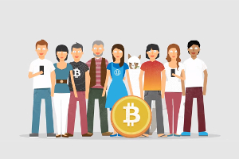
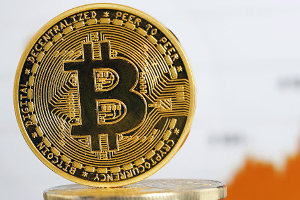
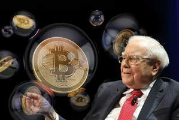

Ce que dit Tracfin à propos de Bitcoin
TRACFIN, organisme d’enquête du ministère de l’Économie et des Finances, a publié il y a quelques jours
son rapport annuel sur le blanchiment des capitaux et le financement du terrorisme.
plus...
Ce document, qui met notamment en garde contre la contrefaçon et « l’usage perverti » de certaines
blockchains pouvant être « fictives » ou « sous contrôle », consacre plusieurs pages à Bitcoin,
mentionné 27 fois dans l’ensemble du texte.
On apprend ainsi que Bitcoin, qui « n’offre en réalité qu’un anonymat partiel », est désormais
concurrencé par « certaines blockchains ont été spécialement conçues pour rendre les transactions
intraçables et favoriser le commerce opaque. » Il n’est donc utilisé à des fins illicites, qu’en
association avec d’autres instruments de paiement (cartes prépayées) dans des montages de plus
en plus sophistiqués aboutissant toujours vers l’outil ultime de blanchiment : les billets de
banque imprimés par les banques centrales.
En savoir plus sur
www.bitcoin.fr

Le bitcoin pris au piège de sa consommation énergétique
Présenté comme un moyen de paiement sécurisé et sans intermédiaire, le bitcoin est devenu très énergivore
avec l'explosion de sa valeur, selon des calculs d'experts contestés par les partisans de la cryptomonnaie.
Une seule transaction en bitcoin consomme actuellement environ 100 kilowattsheure (KWh), soit l'équivalent
d'une ampoule allumée pendant trois mois, selon une étude du courtier en énergie français Selectra.
plus...
En comparaison, le même paiement effectué à l'aide d'une carte bleue consomme 500 fois moins d'électricité.
Pour ses calculs, Selectra dit avoir adopté une approche plus conservatrice que le site Digiconomist,
selon lequel la consommation d'énergie générée par la cryptomonnaie est désormais équivalente à celle d'un
pays comme la Bulgarie, soit près de 35 terawattsheures (TWh). Ce serait 8 TWh de plus qu'à la mi-novembre,
affirme Digiconomist.
"Nous sommes sur une pente forte, avec une consommation qui augmente chaque jour", s'inquiète Julien Maldonato,
associé conseil industrie financière au cabinet Deloitte. La plus connue des monnaies cryptographiques a vu
son cours s'envoler de 1 000 dollars début janvier 2017 à plus de 18 000 dollars aujourd'hui. En décembre,
deux importantes places boursières de Chicago ont introduit des produits financiers en bitcoins.
En savoir plus sur
www.quebec.huffingtonpost.ca

Pourquoi cette bulle du bitcoin est fantastique
Une petite nouvelle qui n’a rien d’anodin du tout a été publiée hier sur Bloomberg. On y raconte comment l’action
d’une obscure compagnie américaine en fintech a explosé de 2400% en une semaine après qu’elle ait annoncé
l’acquisition d’un non moins obscur fournisseur de solutions de microcrédit.
plus...
Les investisseurs se sont emballés du fait que les services en question, fondés sur les technologies
de blockchain, ne négociaient que des cryptomonnaies. Les mots magiques étaient là. N’importe quelle
entreprise qui se réclame de ce créneau devient une coqueluche, qu’elle repose ou non sur un modèle
d’affaires viable n’est même plus pertinent. Pourquoi s’embarrasser de ce détail?
Signe des temps, sur le site de Bloomberg, juste au-dessus de la nouvelle, il y avait ce bandeau
publicitaire qui faisait la promotion de contrats à terme sur le bitcoin: The First U.S. Bitcoin
Futures. Long. Short. Edge.
Vous percevez la même chose que moi? Il y a comme une ambiance de l’an 2000, vous ne trouvez pas?
L’excitation monte de semaine en semaine. Je ne peux vous dire quand on atteindra le climax, mais
je sens que ça vient.
En savoir plus sur
www.lesaffaires.com